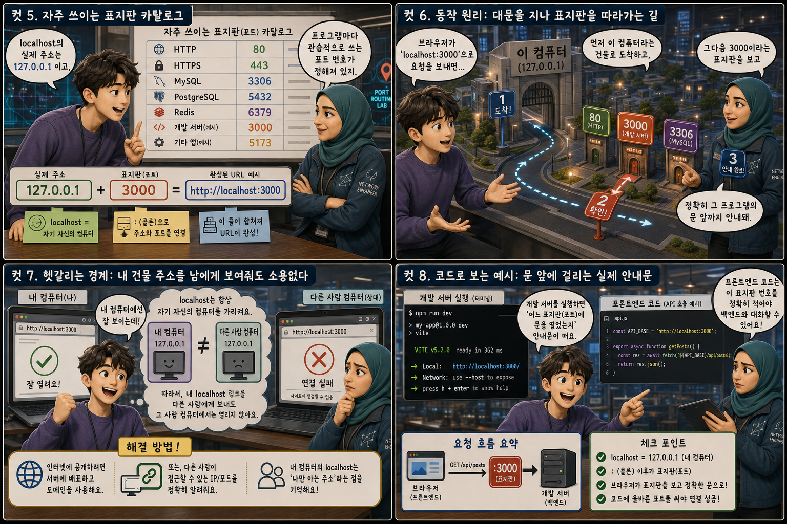
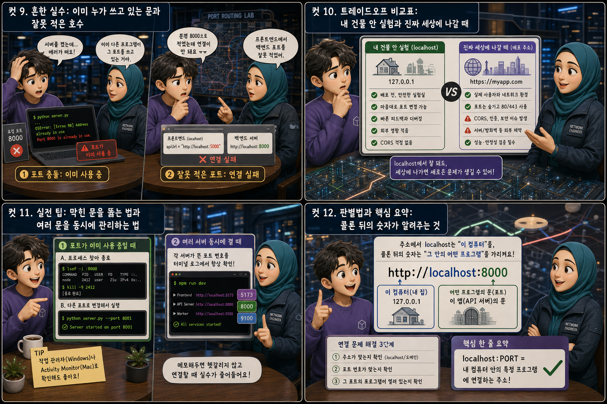

건물 하나와 문 앞 사무실 호수에 비유해, 개발자 도구에 자주 뜨는 그 낯선 주소를 12컷으로 풀어봅니다.
localhost:PORT
개발을 시작하면 가장 먼저 마주치는 낯선 주소가 http://localhost:3000 같은 것입니다. 이 주소는 인터넷 저편의 어떤 서버가 아니라, 지금 코드를 실행하고 있는 바로 이 컴퓨터를 가리킵니다. 그런데 콜론 뒤에 붙은 숫자는 또 무엇일까요. 이 글은 localhost를 ‘내 컴퓨터’라는 건물 한 채로, 포트 번호를 그 건물 안 문 앞에 붙은 사무실 호수로 비유해, 두 가지가 왜 항상 짝을 이루어 다니는지 하나씩 풀어봅니다.
PART 1 / 3 — 정의와 비교 (컷 01–04)
fourcut-01 — 컷 01 ~ 04
컷 01
localhost:3000, 대체 어디로 찾아가는 주소일까
개발자 도구를 켜면 자주 보이는 http://localhost:3000은 저 멀리 있는 서버가 아니라 지금 이 컴퓨터 자신을 가리키는 주소다.
화면 속 브라우저 주소창에 http://localhost:3000이 떠 있고, 노트북 뒤로는 마치 건물 입면도처럼 여러 층의 사무실이 드러납니다. 건물 전체는 ‘이 컴퓨터 한 대’를 가리키고, 3층 창문 앞에 붙은 작은 표지판 ‘3000’은 그 안에서 지금 실행 중인 프로그램 하나를 가리킵니다. 이 시리즈는 그 주소가 어떻게 이루어져 있는지, 그리고 뒤에 붙은 숫자가 무엇을 뜻하는지 건물과 사무실 호수에 비유해 하나씩 풀어봅니다.
컷 02
정의부터 명확히: 건물 주소와 사무실 호수
localhost는 ‘내 컴퓨터’라는 건물 자체를 가리키는 주소이고, 포트 번호는 그 건물 안에서 어떤 프로그램(사무실)으로 찾아갈지 알려주는 호수다.
localhost는 ‘이 컴퓨터 자신’을 가리키는 특별한 주소입니다. 다른 사람의 컴퓨터가 아니라 지금 코드를 실행하고 있는 바로 이 기기를 뜻합니다. 그런데 한 컴퓨터 안에는 동시에 여러 프로그램이 떠 있을 수 있으므로, 그중 어떤 프로그램으로 찾아갈지 알려주는 번호가 필요한데 그것이 포트(port)입니다. 건물 주소만 알아서는 몇 층 몇 호 사무실인지 알 수 없듯이, localhost만으로는 어떤 프로그램인지 알 수 없기 때문에 반드시 포트 번호가 함께 따라붙습니다. 실제로 3000호에는 프론트엔드 개발 서버가, 8000호에는 백엔드 서버가 각각 문패를 걸고 있는 식입니다.
컷 03
나란히 비교: 전 세계로 열린 문과 나만 들어가는 문
실제 인터넷 주소(도메인)는 전 세계 누구나 접속할 수 있는 문이지만, localhost는 내 컴퓨터 안에서만 열리는 문으로 개발 중 확인용으로 쓰인다.
우리가 평소 쓰는 www.example.com 같은 실제 도메인 주소는 전 세계 어디서든 인터넷에 연결된 사람이라면 누구나 접속할 수 있는 공개된 문입니다. 반면 localhost는 지금 코드를 실행하고 있는 바로 이 컴퓨터 안에서만 열리는 문으로, 다른 사람이 자신의 컴퓨터에서 내 localhost 주소를 입력해도 결코 같은 곳에 닿지 않습니다. 그래서 localhost는 아직 세상에 공개하지 않은 코드를 개발 중에 나 혼자 확인해보는 용도로 쓰입니다.
컷 04
한 문장으로 정리하면
localhost는 내 컴퓨터를 가리키는 주소이고, 포트 번호는 그 컴퓨터 안에서 어떤 프로그램인지 구분하는 문 번호다.
LOCALHOST
이 컴퓨터를 가리키는 주소
PORT
어떤 프로그램인지 구분하는 문 번호
definition
이 한 문장만 기억해도 왜 주소 뒤에 항상 콜론과 숫자가 붙어 다니는지 이해할 수 있습니다. 건물까지는 localhost가 데려다주고, 정확히 몇 호 사무실인지는 포트 번호가 알려줍니다.
PART 2 / 3 — 표지판 카탈로그와 동작 원리 (컷 05–08)

fourcut-02 — 컷 05 ~ 08
컷 05
자주 쓰이는 표지판 카탈로그
localhost의 실제 주소는 127.0.0.1이며, 프로그램마다 관습적으로 자주 쓰는 포트 번호가 정해져 있고, 이 둘이 합쳐져 http://localhost:3000 같은 URL이 완성된다.
localhost의 실제 정체는 127.0.0.1이라는 숫자 주소이며, localhost는 이 숫자를 외우기 쉽게 부르는 별명입니다. 프로그램마다 관습적으로 즐겨 쓰는 포트 번호가 있는데, 일반 웹은 80이나 443, React 같은 프론트엔드 개발 서버는 3000, 백엔드 서버는 8000이나 8080, MySQL은 3306, PostgreSQL 같은 데이터베이스는 5432를 흔히 씁니다. 이 건물 주소와 호수 번호를 합쳐 127.0.0.1 + 3000 = http://localhost:3000처럼 콜론(:)으로 이어 적으면, 브라우저는 정확히 어느 컴퓨터의 어느 프로그램을 찾아가야 하는지 알게 됩니다.
컷 06
동작 원리: 대문을 지나 표지판을 따라가는 길
브라우저가 localhost:3000으로 요청을 보내면 먼저 이 컴퓨터라는 건물로 도착하고, 그다음 3000이라는 표지판을 보고 정확히 그 프로그램의 문 앞까지 안내된다.
브라우저 요청→이 컴퓨터(localhost) 도착→표지판에서 포트 확인→3000호 프로그램→응답 반환→화면에 표시
브라우저에 http://localhost:3000을 입력하면 요청은 먼저 ‘이 컴퓨터’라는 건물, 즉 localhost로 도착합니다. 건물에 들어선 다음에는 주소 뒤에 붙은 3000이라는 표지판을 보고 정확히 그 번호로 등록된 프로그램의 문을 찾아갑니다. 그 프로그램이 3000번 포트에서 실행되고 있다면 요청을 받아 응답을 만들어 돌려주고, 그 응답은 온 길을 그대로 되짚어 브라우저 화면에 표시됩니다. 이렇게 건물과 호수가 정확히 맞아떨어져야만 원하는 프로그램과 대화할 수 있습니다.
컷 07
헷갈리는 경계: 내 건물 주소를 남에게 보여줘도 소용없다
localhost는 컴퓨터마다 항상 자기 자신을 가리키므로, 내 화면에서는 잘 보이던 localhost 링크를 다른 사람에게 보내도 그 사람의 컴퓨터에서는 열리지 않는다.
localhost는 고정된 하나의 장소를 가리키는 주소가 아니라, ‘지금 이 요청을 보낸 컴퓨터 자신’을 가리키는 상대적인 주소입니다. 그래서 내 컴퓨터에서 localhost:3000이 잘 열린다고 해서, 그 링크를 그대로 친구에게 보내면 친구의 컴퓨터는 자기 자신의 3000번 포트를 찾아가게 되어 아무것도 열리지 않습니다. 다른 사람과 화면을 공유하려면 localhost가 아니라 실제로 배포된 공개 주소나 별도의 터널링 서비스가 필요합니다. 이 차이를 모르면 “내 컴퓨터에서는 되는데 왜 안 열리냐”는 흔한 오해가 생깁니다.
컷 08
코드로 보는 예시: 문 앞에 걸리는 실제 안내문
개발 서버를 실행하면 터미널에 “어느 표지판에 문을 열었는지” 안내문이 뜨고, 프론트엔드 코드는 그 표지판 번호를 정확히 적어야 백엔드와 대화할 수 있다.
터미널 — 서버를 켜면 뜨는 안내문
$ npm run dev
VITE v5.2.0 ready in 362 ms
→ Local: http://localhost:3000/→ Network: use --host to expose
프론트엔드 코드 — 어느 호수로 물어볼지 적기
// 백엔드가 열려 있는 포트를 정확히 적는다const res = await fetch(
'http://localhost:8000/api/users'
);
React 같은 개발 서버를 실행하면 터미널에 Local: http://localhost:3000 같은 안내문이 뜨는데, 이는 지금 3000호 문이 열려 접속을 기다리고 있다는 뜻입니다. 프론트엔드 코드에서 백엔드에 데이터를 요청할 때는 fetch('http://localhost:8000/api/users')처럼 백엔드 서버가 실제로 열려 있는 포트 번호를 정확히 적어야 합니다. 건물 주소는 맞아도 호수를 잘못 적으면 엉뚱한 문을 두드리는 것과 같아서, 포트 번호 하나만 달라도 요청은 목적지에 닿지 못합니다.
PART 3 / 3 — 실수, 트레이드오프, 실전 팁과 요약 (컷 09–12)

fourcut-03 — 컷 09 ~ 12
컷 09
흔한 실수: 이미 누가 쓰고 있는 문과 잘못 적은 호수
이미 다른 프로그램이 쓰고 있는 포트로 서버를 열려 하면 “포트가 이미 사용 중”이라는 에러가 나고, 프론트엔드가 백엔드 포트 번호를 잘못 적으면 연결 자체가 되지 않는다.
⚠ Error: address already in use :::3000
포트 번호는 한 컴퓨터 안에서 프로그램마다 겹치지 않게 예약되는 자리입니다. 이미 다른 프로그램이 3000번 포트를 쓰고 있는데 또 다른 서버를 같은 포트로 열려고 하면 “포트가 이미 사용 중(address already in use)”이라는 에러를 만나게 됩니다.
✓ 실제 포트를 다시 확인한다
또 하나 흔한 실수는 프론트엔드가 백엔드에 요청을 보낼 때 실제 백엔드가 열려 있는 포트 번호(예: 8000)가 아니라 다른 번호(예: 8080)를 잘못 적어두는 것입니다. 이 경우 건물은 맞게 찾아갔지만 엉뚱한 문을 두드리는 셈이라 연결이 되지 않습니다.
컷 10
트레이드오프 비교표: 내 건물 안 실험과 진짜 세상에 나갈 때
localhost 안에서는 배포 전에 안전하고 자유롭게 테스트할 수 있지만, 실제 배포 주소로 옮기면 CORS처럼 localhost에서는 없던 새로운 문제가 나타날 수 있다.
safe sandbox vs real world
비교 축
localhost (내 건물 안)
실제 배포 주소
접근 범위
울타리 안 마당 (나만 접근)
열린 대문 (전 세계 접근)
테스트 자유도
마음대로 껐다 켜도 안전
조심스러운 체크리스트 필요
다른 주소와의 대화
조용한 복도, 제약 거의 없음
CORS 등 자물쇠가 걸린 문
실수의 대가
가벼움, 나만 영향
무거움, 실제 사용자에게 영향
localhost 안에서는 내 컴퓨터라는 건물 안에서만 실험하는 것이므로 마음껏 코드를 고치고 서버를 껐다 켜도 안전하고, 다른 누구에게도 영향을 주지 않습니다. 하지만 실제 배포 주소로 옮겨 전 세계에 문을 열면, 서로 다른 도메인끼리 데이터를 주고받을 때 브라우저가 막아서는 CORS(Cross-Origin Resource Sharing) 문제처럼 localhost에서는 등장하지 않던 새로운 제약이 나타나곤 합니다. 그래서 localhost에서 잘 되던 기능도 배포 후에는 한 번 더 점검하는 습관이 필요합니다.
컷 11
실전 팁: 막힌 문을 뚫는 법과 여러 문을 동시에 관리하는 법
“포트가 이미 사용 중”이라는 에러가 나면 그 포트를 쓰는 프로세스를 찾아 종료하거나 다른 포트로 바꿔 실행하고, 여러 서버를 동시에 켤 때는 각 서버가 뜬 포트 번호를 터미널 로그에서 항상 확인한다.
🔒 “포트가 이미 사용 중” → 막힌 문 뚫기
그 포트를 쓰는 프로세스를 찾는다
해당 프로세스를 종료한다
또는 다른 포트 번호로 새로 연다
🗂 여러 서버 동시 실행 → 로그로 포트 확인
각 서버가 뜬 포트를 로그에서 확인
프론트엔드/백엔드 포트를 메모
연결 전 포트 번호부터 재확인
“포트가 이미 사용 중”이라는 에러를 만나면 당황하지 말고, 그 포트 번호를 쓰고 있는 프로세스를 찾아 종료하거나 실행 명령에서 포트 번호를 다른 숫자로 바꿔 다시 켜면 됩니다. 프론트엔드와 백엔드를 동시에 켜서 개발할 때는 각 서버가 실제로 몇 번 포트에서 떴는지 터미널에 찍히는 로그 문구를 습관적으로 확인하는 것이 중요합니다. 이 확인 습관 하나만 있어도 “분명 서버는 켰는데 왜 연결이 안 되지”라는 문제의 절반은 그 자리에서 바로 해결됩니다.
컷 12
판별법과 핵심 요약: 콜론 뒤의 숫자가 알려주는 것
주소에서 localhost는 “이 컴퓨터”를, 콜론 뒤의 숫자는 “그 안의 어떤 프로그램”을 가리킨다는 사실 하나만 기억하면 대부분의 연결 문제를 스스로 풀 수 있다.
가장 간단한 판별법은 이것입니다. 주소에서 localhost 부분은 언제나 ‘이 컴퓨터 자신’을 가리키고, 콜론 뒤에 붙은 숫자는 ‘그 컴퓨터 안의 어떤 프로그램인지’를 가리킵니다. localhost의 실제 정체는 127.0.0.1이라는 고정된 숫자 주소이며, 포트 번호는 한 컴퓨터 안에서 여러 프로그램이 동시에 떠 있어도 서로 겹치지 않게 구분해주는 문 번호입니다. 건물 주소를 알아도 호수를 모르면 사무실을 찾을 수 없듯이, 개발할 때는 항상 어떤 프로그램이 몇 번 포트에서 기다리고 있는지를 정확히 알고 있어야 합니다.
localhost = 내 컴퓨터포트 = 프로그램 구분 번호127.0.0.1이 진짜 주소남에게 링크를 보내도 안 열림포트 충돌 = 이미 사용 중 에러판별법: 콜론 뒤 숫자를 봐라
건물 하나, 그 안의 수많은 문
localhost는 지금 이 컴퓨터라는 건물 전체를 가리키고, 포트 번호는 그 건물 안에서 어떤 프로그램의 문을 두드릴지 알려줍니다. 건물까지는 localhost가 데려다주고, 정확히 몇 호 사무실인지는 언제나 콜론 뒤의 숫자가 알려줍니다.